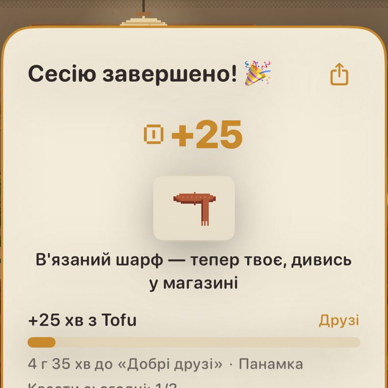
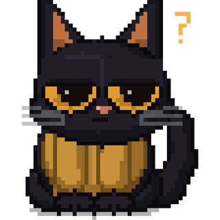
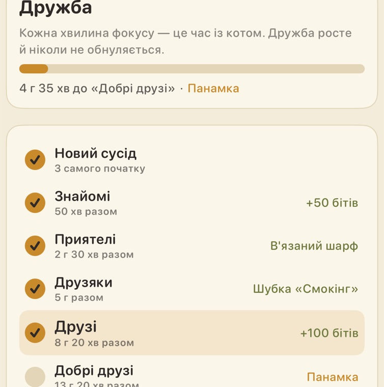
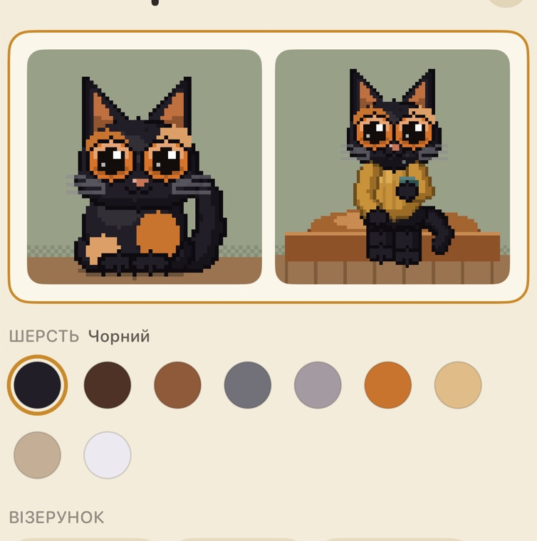
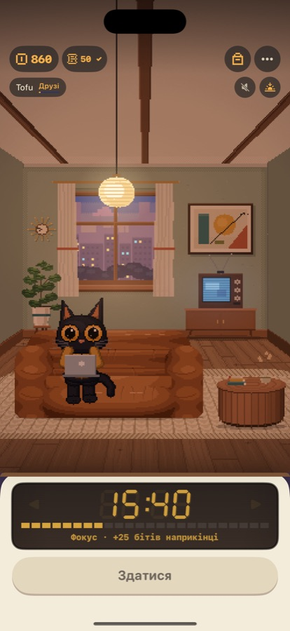
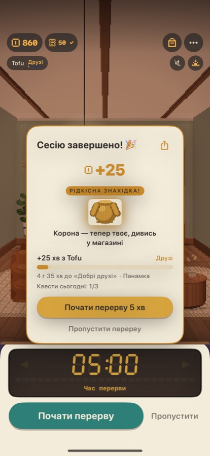
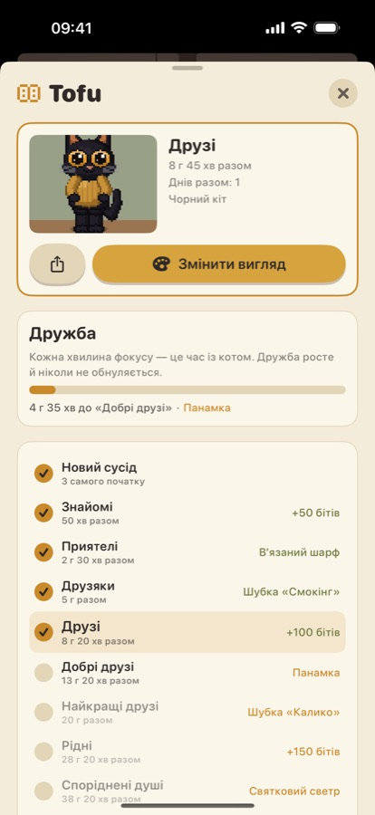
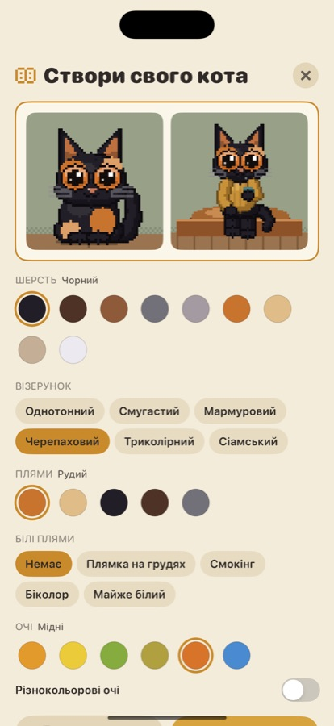
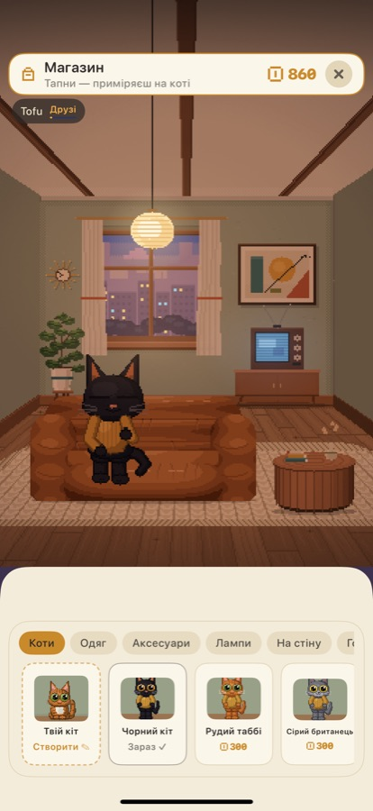
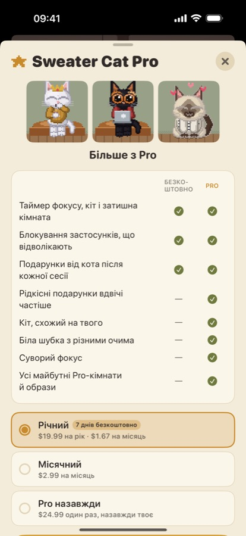

Кіт, який допомагає зосередитись
Відклади телефон, натисни «старт» — і кіт відкриває ноутбук і працює поруч. Затишний таймер фокусу, який хочеться відкривати.
Це 4 години на день. Віддай лише 25 хвилин чомусь справді важливому — разом із котом, який складе компанію.
Як це працює
Три кроки. Одна затишна звичка.
Чому захочеться повертатись
Таймер із серцем (і в светрі)
Подарунок після кожної сесії
Закінчив фокус — кіт щось приносить: біти, шарф, а часом рідкісну знахідку. І маленький сюрприз у кімнаті щодня.

Те, що відволікає, — під замком
Під час фокусу інші застосунки заблоковані. Відкриєш Instagram — кіт подивиться на тебе отак.

«Попався 👀 — Tofu ще працює.»Від сусідів до найкращих друзів
Кожна хвилина фокусу — час разом. Дружба росте, ніколи не обнуляється, а кожна нова стадія приносить подарунок.

Створи кота, як свого
Обери шерсть, плями й очі — і отримай піксельного двійника свого кота.

Зазирни всередину
Кожен екран — маленька кімната






Питання
Часті питання
Коли вихід?
Дуже скоро в App Store для iPhone. Залиш пошту — напишемо один раз, у день запуску.
Це справді безкоштовно?
Так. Таймер, кіт, кімната, блокування застосунків, подарунки й віджети — безкоштовно й без реклами. Pro додає більше, як-от власного кота.
Як працює блокування?
Через «Екранний час» Apple. Під час фокусу інші застосунки заблоковані, дзвінки працюють завжди, винятки обираєш ти. Ми не бачимо, які застосунки ти вибрав.
А якщо пропущу кілька днів?
Нічого поганого. Кіт не хворіє й не сумує — просто радіє, коли ти повертаєшся.
Буде Android?
Поки ні. Хочеш — залиш пошту й напиши про це.
Які дані ви збираєте?
Жодних. Усе лишається на телефоні. Деталі — в політиці конфіденційності.
Дізнайся першим
Sweater Cat майже готовий. Залиш пошту — і кіт нявкне в день запуску.